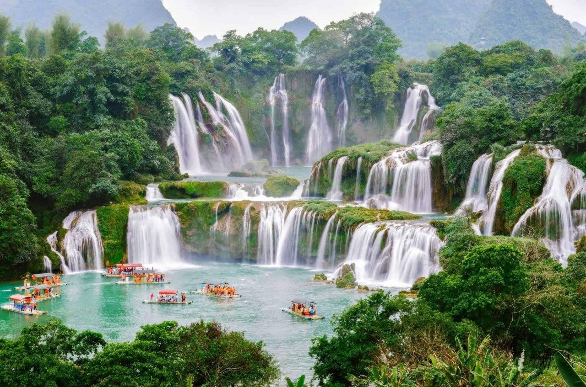

Ha Long Bay
A breathtaking wonder of the world, Ha Long Bay is considered one of the premiere tourist destinations for those looking to take in the beauty of Asia's landscape.

Ban Gioc Waterfall
A landscape which graces many a postcard or hotel wall. This waterfall marks the border between Vietnam and China.

Terrace Farms
Rice farms built on leveled stretches of hillside to maximize farmable land.